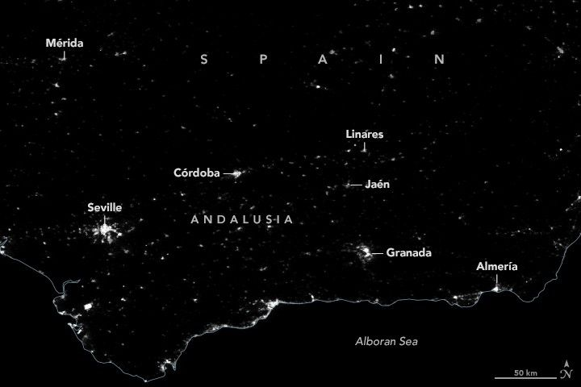

Blackout in Andalusia
A widespread power outage on April 28, 2025, disrupted the daily lives of tens of millions of people across the Iberian Peninsula. Trains came to a halt, hospitals relied on generators, and phone and internet connections failed. In Spain, more than half of the electricity lost around midday was restored by evening, according to news reports. But in the country’s south, darkness lasted through at least the night.
The sustained power outages in Andalusia, an autonomous community in southern Spain, are visible in these maps. They show nighttime light emissions across the area before the outage (left) and during the event (right) in the early morning hours of April 28 and April 29, respectively. The maps are from NASA’s Black Marble product, provided by Ranjay Shrestha and Zhuosen Wang of the Black Marble science team at NASA Goddard Space Flight Center. They are based on data collected by the VIIRS (Visible Infrared Imaging Radiometer Suite) on the NOAA-20 satellite.
The Black Marble team calibrates the measurements to account for variations in the landscape, the atmosphere, and the Moon phase, as well as to remove stray light from non-electric sources. On April 29, clouds were primarily offshore and did not obscure many ground-based light sources. The grayed-out areas on the map below indicate where data were lacking due to clouds.
This image shows nighttime lights across Andalusia, Spain, during a blackout. Grayed-out areas indicate where clouds prevented the satellite from collecting data, though these areas are mostly offshore toward the bottom of the image.
Analyzing data from the Black Marble product, Shrestha noticed that lights had appeared to return to most urban areas across the Iberian Peninsula by April 29. He noted, though, that rural areas—especially in Andalusia and the southern and eastern parts of the Granada region—remained dark.
“These prompt observations of nighttime lights are invaluable for rapidly assessing the extent and progression of such outages, especially in areas where ground reporting may be delayed,” Shrestha said.
Analyses of Black Marble data collected after disasters in other parts of the world have revealed that people in rural areas frequently have to wait longer than those in urban areas for power to be restored. Miguel Román, the deputy director for atmospheres and data systems at NASA Goddard, and colleagues observed the phenomenon in Puerto Rico after Hurricane Maria.
“It creates a major dilemma since most rural areas are populated by at-risk populations, like the elderly,” Román said. “The April 28 blackout across Spain and Portugal highlights the importance of accessible tools like Black Marble in enhancing disaster response and resilience planning.”